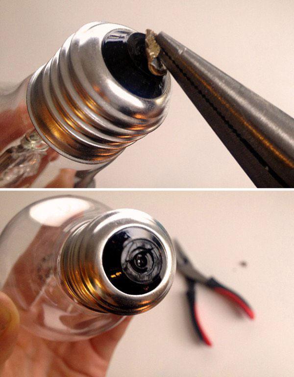
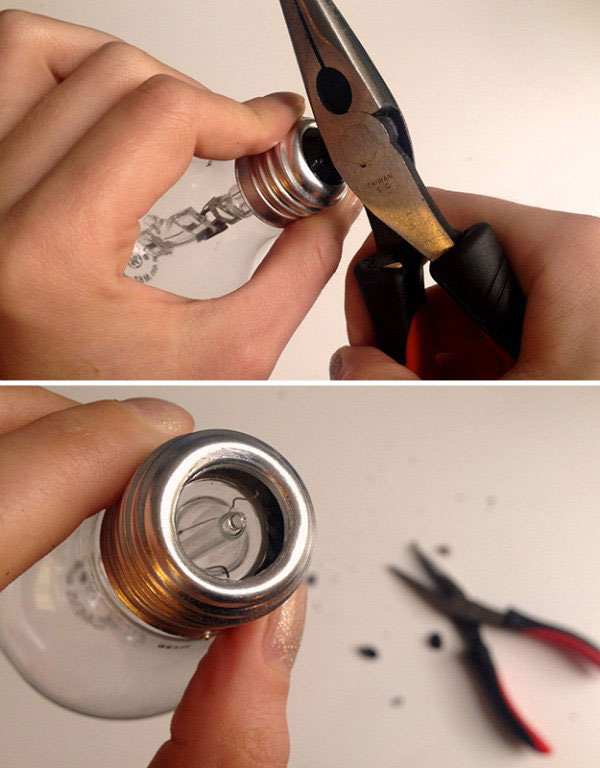
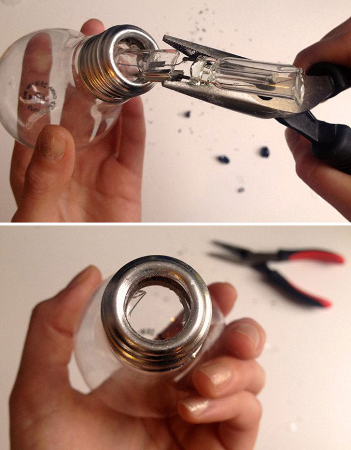
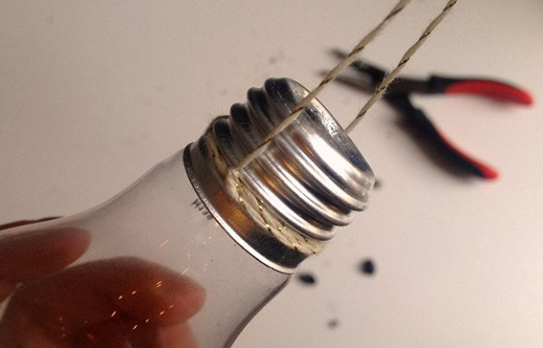

| First |
 |
The bottom of each lightbulb will have a round metal tab. Use your pliers to remove the metal tab. |
| Second |
 |
In order to get to the inside of the lightbulb, you will have to remove the black glass piece. To do this, hold the lightbulb at the metal base so that you don’t break the bulb piece. Then, firmly tap the side of your metal pliers (you can use a hammer if you prefer) against the black glass. With a couple of hits, the black glass will break. Turn the lightbulb upside down so all the broken glass falls out. |
| Third |
 |
Hold the lightbulb by the metal base and remove the glass piece that encases the filament. Use the tip of the pliers to gently tap the glass until it breaks. Be careful not to tap too hard. |
| Fourth |
 |
Once the lightbulb is cleared out, it’s time to prep the vase for hanging. Begin by cutting your choice of fishing line or twine to the desired length. Then tie the fishing line (or twine) around the metal base of the bulb. |
| Fifth |
|
Place your choice of fresh (or dried) flowers and begin to hang them up! |